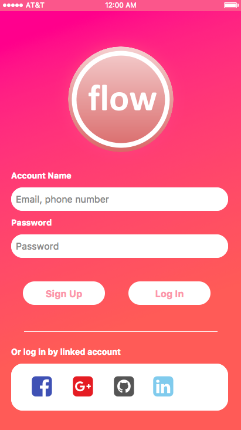
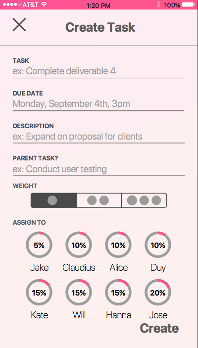
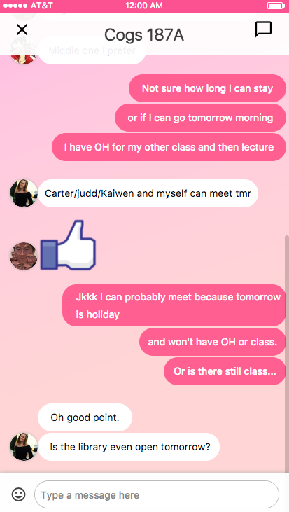

Flow is a high-fidelity prototype of an app in which my team developed in our usability and information architecture class (COGS 187A). Our app goal was to make group work more enjoyable and fair with our three main features: accountability, equal work, and collaboration. In this course, we examined the cognitive basis of successful web and multimedia design. Topics: information architecture, navigation, usability, graphic layout, transaction design, and how to understand user interaction.
5 weeks, UX Researcher, UI Co-Designer, Team Presenter
Inspiration for this app idea originated by a common understanding that most college students dislike group work, often because team members do not participate and most of the work falls in a select few individuals. Noticing this is a common trend as well as understanding the importance of teamwork skills, our group set out on a mission to develop Flow. Flow allows group work to be more enjoyable by 3 ways: 1) automatically calculating how much work each team member is assigned to in order to help spread an equal distribution of work 2) keeping each member accountable by push notifications notifying all members of recent updates and upcoming reminders, and 3) allowing easy communication and collaboration directly through the app so team members can have one location to view the status of the project and communicate to their teammates.
5 weeks, UX Researcher, UI Co-Designer, Team Presenter
  